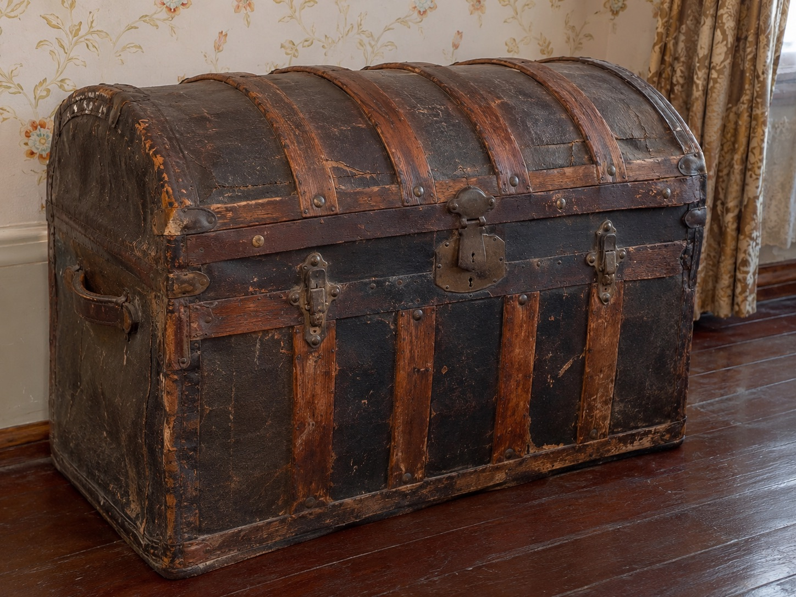

Anna Whaley's Steamer Trunk
Whaley House | San Diego, California
The Artifact
Among the original family possessions preserved at the Whaley House Museum are several traveling trunks belonging to Anna Whaley.
These objects provide a personal connection to a woman whose life extended well beyond the walls of the family's historic home.
Save Our Heritage Organisation identifies one of the surviving pieces as an old Saratoga trunk. An October 2015 museum photograph shows the trunk being examined by historian Dean Glass.

Its Story
Traveling trunks were important personal possessions during the nineteenth century. They offered a practical way to transport clothing, papers, and belongings during journeys undertaken before modern luggage became commonplace.
Anna Whaley lived during a period of enormous transformation in California and the American West. Her personal possessions help document aspects of domestic life that cannot be fully reconstructed from the architecture of her family home.
The surviving trunks were returned to the museum through a donation from Frederick Reynolds Gerlach, a great-great-grandson of Thomas and Anna Whaley.
While the museum identifies the trunks as family possessions, their exact journeys and the contents they once carried cannot be established from the available article alone.
Connection to the Building
The Whaley House is one of San Diego's notable nineteenth-century residences. Over time, the property has become associated with stories about its occupants and alleged paranormal activity.
Anna Whaley's trunk offers a more tangible connection to the family's documented history.
Unlike stories that have changed through repeated retelling, the surviving trunk is a physical object with a recorded family connection and documented museum provenance.
Objects such as this help preserve the human history of the residence, allowing its former occupants to be understood through their possessions as well as their stories.
Sources and Image Credit
Glass, D. (2015, October). Update on the Whaley House. Save Our Heritage Organisation. Original museum article and photograph
Save Our Heritage Organisation. Whaley Family Special Library Collection. Historical archives